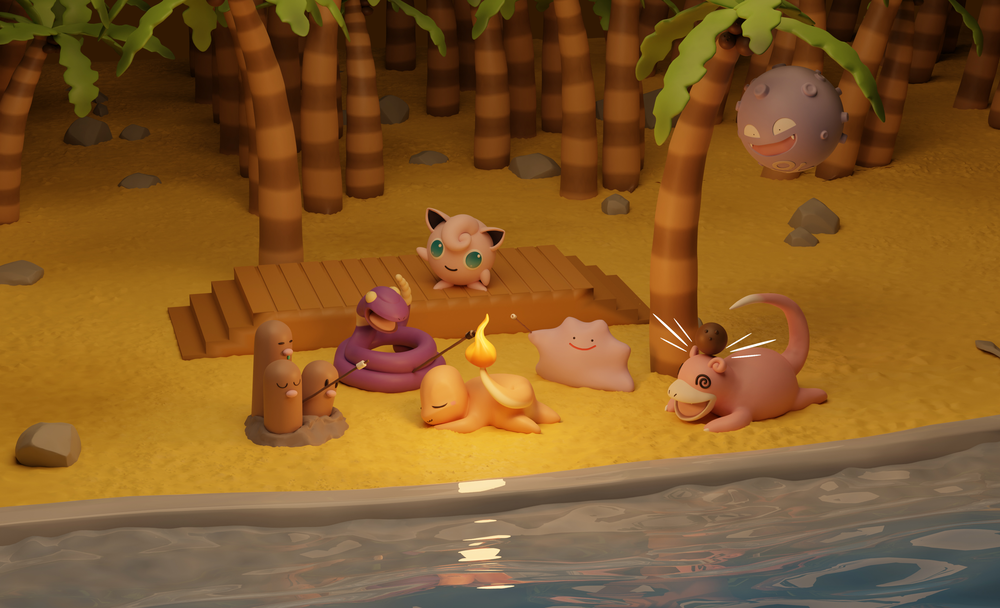
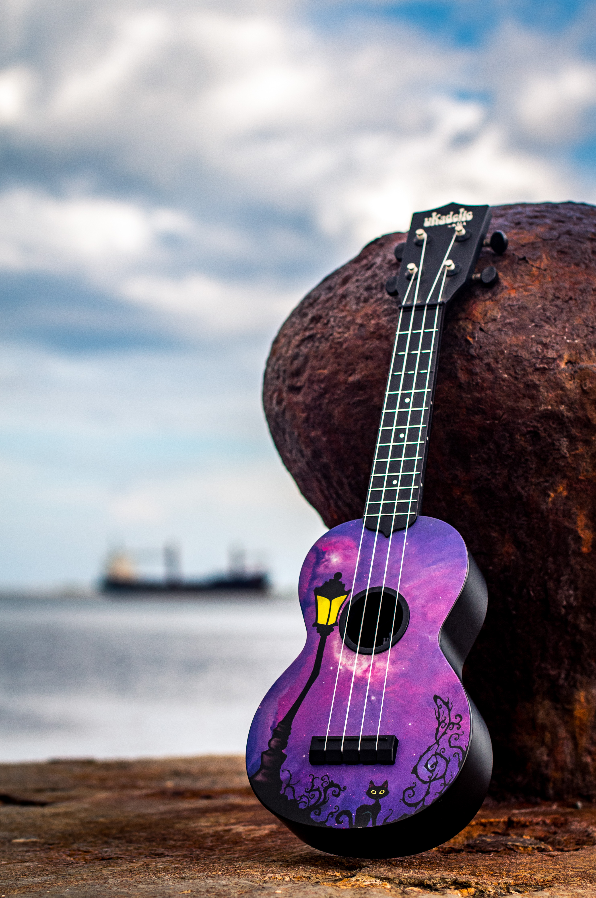

Progress.
September 6, 2021 by Errol Green

It has been a couple months since I've started my journey learning how to sculpt.
Learning how to maneuver in my software of choice (Zbrush) has been confusing to say the least.
Not only that but I've had to learn how to make sense of 3D space and I thought it would've been easy since, well, I live in a 3-Dimensional world,
but I guess that doesn't count for much.
The hardest part however has definitely been the sculpting, oh dear the sculpting. I had close to zero experience with art so sculpting was excruciatingly painful.
Depicted in the image beside this post is a sculpt of some pokemon roasting some marshmallows while listening to a Jigglypuff performing on stage.
The image is a representation of my progress. Three weeks had gone by before I finished the sculpt but I managed to do it, it's not perfect and it definitely needs work but I made it and I'm proud of it.
Sure I used a step by step tutorial to do it but let me have this ok, I need the confidence lol.
Something familiar.
August 30, 2021 by Errol Green

I've been practicing sculpting for so long that I forgot that I was a photographer. With that train of thought I went out to take some pictures and carried some stuff along.
My journey found me in downtown kingston near the waterfront, the smell of the sea and the feeling of the breeze on my skin brought back memories of a bygone era,
an era where we were allowed to be outside without masks and fireworks exploded in the night sky as we celebrated another revolution around Sol, our sun.
I miss those times.
Getting back on track, the scenery was perfect. Ships passing by in the distance, calm waves and pelicans diving in hopes of catching unsuspecting fish.
This was the picture of serenity that I was hoping to capture and I figured that my ukulele Uuku would be the perfect model for this composition.
I mean what's more peaceful than a ukulele, right? I think the picture came out perfectly and it deserves a spot on my grandmas' fridge (I've always wanted that privilege).